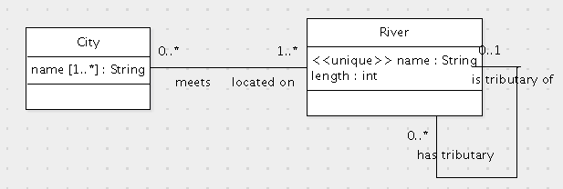

Grading Criteria

Translate this data model to SQL.
create table Person (
id int primary key,
name varchar(255) not null unique,
dob date not null
);
create table Company (
id int primary key
);
create table CompanyTitle (
company int,
foreign key(company) references Company(id) on update cascade on delete cascade,
title varchar(255),
primary key(company, title)
);
create table Employment (
employs int,
foreign key(employs) references Person(id) on update cascade on delete cascade,
employedBy int,
foreign key(employedBy) references Company(id) on update cascade on delete cascade,
position varchar(255),
primary key(employs, employedBy)
);
-- The following is not required:
alter table Person
add foreign key(id) references Employment(employs) on update no action on delete no action;
Grading criteria:
create table Person (
id int primary key,
name varchar(100)
);
create table Mine (
designation varchar(100) primary key,
location varchar(5000) not null
);
create table WorkInterval (
miner int references Person(id)
on update cascade on delete cascade,
mine varchar(100) not null references Mine(designation)
on update cascade on delete cascade,
start datetime not null,
end datetime,
primary key(miner, start),
check (end is null or end > start)
);
Write the following queries in SQL:
A. (8 points) For each miner, list the miner's name and the date when the miner first started working in some mine.
select p.name, min(w.start)
from Person p, WorkInterval w
where p.id = w.miner
group by p.id;
Grading criteria:
Some solutions used a nested subquery instead of grouping. This results in duplication in the result set. Unfortunately, specifying distinct will remove required duplicates.
B. (8 points) List the mines by location that have a person named Luis who has worked in the mine.
select m.location
from Mine m
where exists (select *
from WorkInterval w, Person p
where m.designation = w.mine
and w.miner = p.id
and p.name = 'Luis');
Grading criteria:
public void printWorkingMiners(Connection connection, String mine) throws SQLException {
long currentTime = System.currentTimeMillis();
Date now = new Date(currentTime);
PreparedStatement statement = connection.prepareStatement
("select p.name, p.id, w.start from Person p, WorkInterval w " +
"where w.miner=p.id and w.mine=? and w.start<? and w.end is null");
statement.setString(1, mine);
statement.setDate(2, now);
ResultSet rs = statement.executeQuery();
while (rs.next()) {
String name = rs.getString(1);
int id = rs.getInt(2);
Date start = rs.getDate(3);
double durationInHours = (currentTime - start.getTime()) / (1000.0 * 3600.0);
System.out.println(name + " (" + id + ") has been in the mine for " + durationInHours + " hours.");
}
statement.close();
}
Fill in the missing statements.